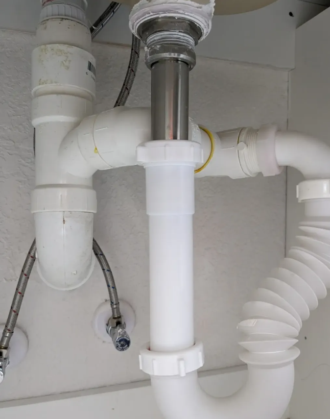
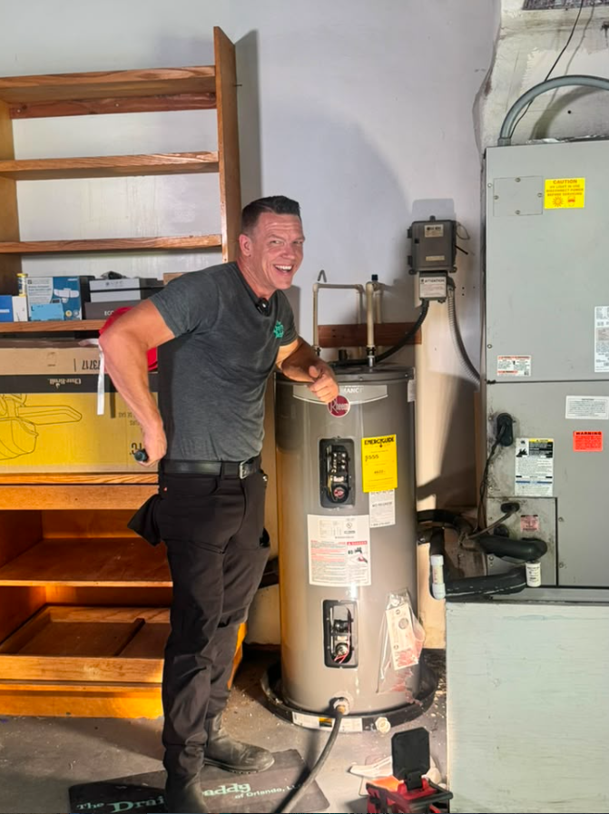
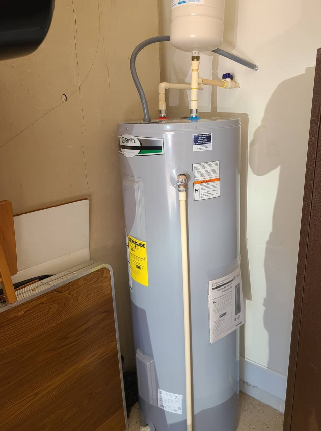
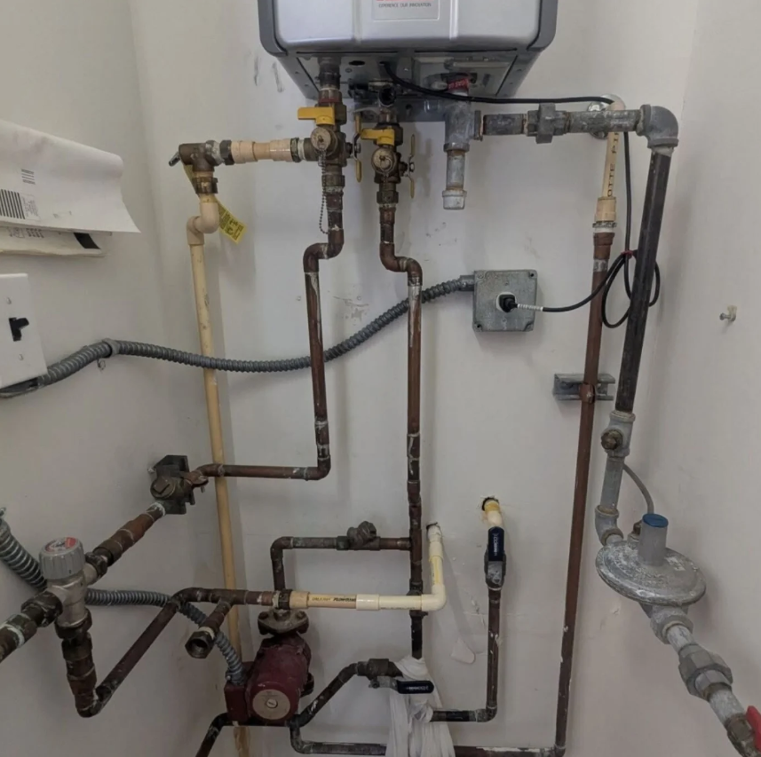

Explore The Drain Daddy’s residential, commercial, drain, water heater, fixture and project plumbing services.

Clear stubborn clogs, slow drains and recurring backups with professional diagnostics and proven clearing methods.
Learn more →
High-pressure drain and sewer cleaning designed to remove grease, sludge, scale and heavy buildup.
Learn more →Replace aging or problem piping with a carefully planned repipe built for long-term reliability.
Learn more →
Repair and replacement options for traditional water heaters with clean, code-conscious installation.
Learn more →
Service and support for solar hot-water systems and related plumbing components.
Learn more →Diagnose damaged drain piping and build a repair plan around the condition and access of your system.
Learn more →Repair or upgrade faucets, sinks, toilets, showers, disposals and other everyday plumbing fixtures.
Learn more →
Improve the water throughout your home with treatment options selected around your water and goals.
Learn more →Assessment and repair support for septic drain-field problems, poor drainage and system performance.
Learn more →Responsive plumbing service for homes, offices, retail spaces and other Central Florida properties.
Learn more →Plumbing planning and installation for new builds with serviceability, efficiency and code compliance in mind.
Learn more →Detailed plumbing solutions for custom homes, remodels and projects that demand a higher level of coordination.
Learn more →